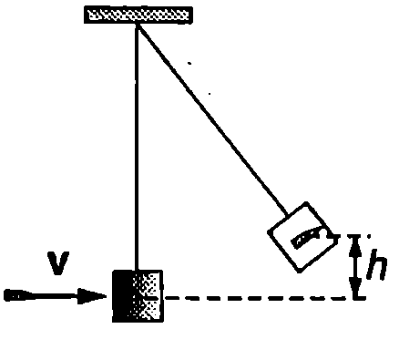
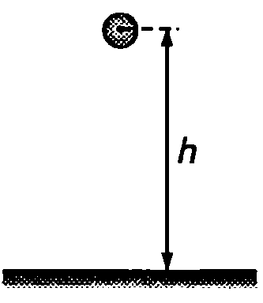
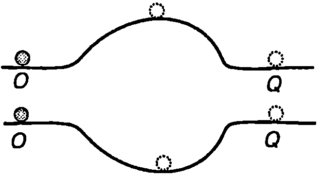
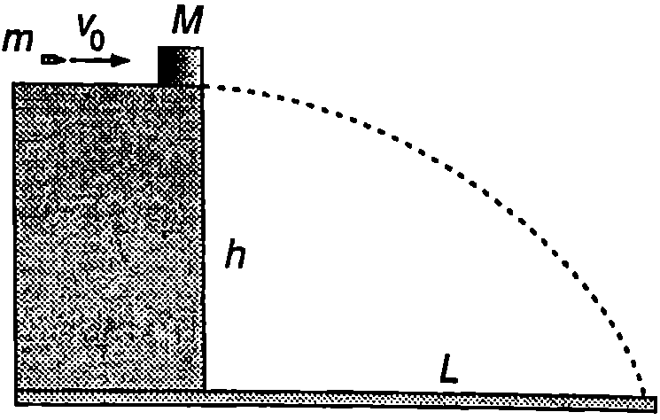

Енергия на механична система
Сумата от кинетичната и потенциалната енергия на всички материални точки от една механична система се нарича механична енергия на системата
където е кинетичната енергия, a потенциалната енергия на системата ( е кинетичната енергия на -тата частица, а е потенциалната и енергия на взаимодействие с всички останали ( частици от системата). Законът за изменение на механичната енергия на една материална точка (уравнение \eqref{eq:9.10} на стр. 62) се обобщава за механична система:
**Изменението на механичната енергия на система от материални точки е равно на работата A_\text{неконс.** на неконсервативните сили, действащи на системата.}
Закон за запазване на механичната енергия
Да разгледаме затворена механична система, в която частиците си взаимодействат само с консервативни сили. Тогава и от уравнение \eqref{eq:11.2} следва, че или
Уравнение \eqref{eq:11.3} изразява закона за запазване на механичната енергия, който гласи:
Механичната енергия на затворена система, в която действат само консервативни вътрешни сили, не се изменя с течение на времето.
В резултат на работата на вътрешни те консервативни сили става само непрекъснато превръщане на кинетична енергия в потенциална и обратно, докато пълната енергия се запазва.
Превръщане на енергията
Във всички реални макроскопични механични системи освен консервативни сили действат и неконсервативни сили например дисипативни сили на триене и съпротивление. Дисипативните сили извършват отрицателна работа () и съгласно с уравнение \eqref{eq:11.2} механичната енергия на системата намалява (). В резултат на работата на силите на триене става превръщане на механичната енергия в топлинна енергия триещите се тела се загряват.
Ще напомним, че класическата механика изучава движението на макроскопичните тела, т.е. на телата, които са изградени от огромен брой микрочастици (молекули и атоми). Атомите и молекулите са в състояние на непрекъснато вътрешно движение и взаимодействие, което обаче не се отчита от класическата механика. Затова енергията на една система от макроскопични тела може условно да се раздели на механична и немеханична енергия. Последната не зависи от скоростите и взаимното положение на телата от системата, а се определя от вътрешното движение и взаимодействие между градивните им частици. Съществуват различни видове немеханична енергия топлинна енергия, химична енергия, ядрена енергия, енергия на топлинното излъчване и др. От гледна точка на съвременната наука всички форми на немеханична енергия се свеждат до кинетична и потенциална енергия на микрочастици от различните структурни равнища на материята. Например топлинната енергия на идеален газ е сума от кинетичната енергия на хаотичното топлинно движение на молекулите на газа. Химичната енергия се определя от кинетичната енергия на градивните частици на атомите и молекулите (ядра и електронни обвивки) и потенциалната енергия на тяхното електрично взаимодействие. Ядрената енергия е сума от кинетичната и потенциалната енергия на градивните частици на атомните ядра (протони и неутрони), които взаимодействат с ядрени и електрични сили. Енергията на електромагнитното излъчване е сума от кинетичната енергия на светлинните кванти (фотоните), които могат да се разглеждат като микрочастици, движещи се със скоростта на светлината.
Процесите в неживата и в живата природа са свързани с непрекъснато преобразуване на енергията от един вид в друг. Преобразуване на енергията става както в космически мащаби, така и в отделните клетки на живите организми. В таблица 11.1 са дадени енергиите, свързани с някои процеси и явления.
\begin{table}
\begin{tabular}{cc}
Явление или процес& Енергия, J\\
Големият взрив (раждане на Вселената)& $10^{68}$\\
Енергия, която се отделя при избухване на свръхнова звезда& $10^{44}$\\
Слънчева енергия, попадаща върху Земята за една година.& $5.10^{24}$\\
Механична енергия на въртене на Земята, която се превръща в топлина за една година поради приливното триене& $10^{20}$\\
Ураган& $10^{15}$\\
Кинетична енергия на голям самолет& $10^9$\\
Дневна дажба храна за възрастен човек& $10^7$\\
Работа на човешко сърце за един тласък& $0,\!5$\\
Електричен разряд на отделен неврон& $10{-10}$\\
Енергия на една от връзките в молекула ДНК&$10^{-20}$\\
\end{tabular}
Приблизителни стойности на енергията (в джаули), свързана с някои явления и процеси в макро- и микросвета.
\label{table:11.1}
\end{table}
Запазване на енергията
Всички експериментални изследвания в различни области на физиката, химията и биологията показват, че енергия не се създава и не изчезва, а в резултат на различни взаимодействия тя само се преобразува от един вид в друг вид. В сила е общ закон за запазване на енергията:
Пълната енергия (сумата от всички видове енергия) на една изолирана система не се изменя.
Под изолирана система се разбира всяка съвкупност от макротела или микрочастици, която, подобно на затворена механична система, не е подложена на външни силови въздействия. Освен това изолираната система не обменя топлинна енергия или излъчване с околните тела. Вътре в системата могат да протичат различни процеси механични, химични, биологични и др., при които се извършват сложни превръщания на енергията от един вид в друг вид, но пълната енергия на системата не се променя. Този факт е надеждно проверен експериментално. Винаги, когато е било констатирано изчезване'' или раждане” на енергия, впоследствие се е установявало, че експериментът не е проведен достатъчно прецизно или не е отчетена някаква неизвестна за онова време форма на енергията.
И така, законът за запазване на енергията е фундаментален закон, който е в сила не само в механиката, но и при всички други процеси в природата.
Пример 11.1
Втора космическа скорост. Определете минималната начална скорост 2, наречена втора космическа скорост, с която ракета трябва да се изстреля от земната повърхност, за да преодолее гравитационното привличане на Земята и да се отдалечи в космическото пространство. Съпротивлението на въздуха не се отчита. Радиусът на Земята е , а земното ускорение е . \end{psexample}
Решение
Ще смятаме системата ракета Земя за затворена механична система, съставена от две тела (еднородно кълбо и материална точка), които взаимодействат с консервативни гравитационни сили. В този опростен модел пренебрегваме дисипативните сили на триене при движението на ракетата в земната атмосфера, както и влиянието на Слънцето и другите небесни тела. Тъй като масата на Земята е много по-голяма от масата на ракетата (), ще смятаме, че центърът на масите на системата съвпада с центъра на Земята. Съгласно със закона за запазване на импулса центърът на масите на затворена система се движи праволинейно и равномерно или се намира в покой. Ще разглеждаме задачата в инерциална отправна система, в която центърът на масите, т.е. центърът на Земята, е в покой. Тогава кинетичната енергия на Земята е нула, а механичната енергия на системата е равна на сумата от кинетичната енергия на ракетата и потенциалната енергия на гравитационното взаимодействие на ракетата със Земята
Коментар. Тъй като при взаимодействието на дадено тяло (ракета и др.) със Земята кинетичната енергия на Земята не се променя, често за краткост е по-удобно да говорим за механична енергия на отделното тяло, както това беше направено в \ref{sec:9. Не трябва да забравяме обаче, че се има предвид механичната енергия на системата тяло-Земя.}
Съгласно с разглеждания модел в системата ракета-Земя не действат неконсервативни сили. Затова нейната механична енергия се запазва енергията в произволен момент е равна на началната енергия:
В зависимост от големината на началната скорост енергията може да бъде както положителна, така и отрицателна или равна на нула. Ракетата ще се отдалечи на безкрайно голямо разстояние само ако . Действително, при потенциалната енергия е нула. Тъй като кинетичната енергия е винаги положителна, то , където е скоростта на ракетата, когато е безкрайно отдалечена. Минималната скорост , необходима за преодоляване на земното притегляне, съответства на случая . Тогава ракетата се отдалечава на безкрайност, където скоростта й е нула (). От уравнението
определяме втората космическа скорости
където сме отчели (вж. уравнение \eqref{eq:5.3} на стр.36), че земното ускорение е .
Пример 11.2
Дървено трупче с маса g е закачено на неразтеглива нишка. Куршум с маса g, който лети хоризонтално със скорост m/s, се забива в трупчето и остава в него. На каква максимална височина ще се издигне трупчето след удара (Фиг. \ref{fig:11.1})? \end{psexample}
Решение
При удара трупчето и куршумът взаимодействат с неконсервативни сили, при което част от механичната енергия се превръща в топлинна енергия. Затова не можем да приложим непосредствено закона за запазване на механичната енергия: на максималната височина и потенциалната енергия на трупчето със заседналия в него куршум е по-малка от началната кинетична енергия на куршума. При удара обаче се запазва импулсът на механичната система трупче-куршум. От закона за запазване на импулса следва уравнението откъдето определяме скоростта на трупчето непосредствено след удара
След удара механичната енергия на системата (трупче с куршум Земя) се запазва: кинетичната енергия, която трупчето със заседналия в него куршум има непосредствено след удара, се превръща в потенциална енергия, когато то достигне максималната си височина. От закона за запазване на енергията следва уравнението откъдето определяме височината
Пример 11.3
Топка от слонова кост е пусната от височина 6, отскача от пода и се издига на същата височина (Фиг. \ref{fig:11.2}). Проследете преобразуването на енергията по време на движението на топката. \end{psexample}

`Фиг. 11.1`

`Фиг. 11.2`
Решение
Топката и Земята образуват механична система от две тела, които взаимодействат с консервативни сили. При падането в резултат на работата на гравитационните сили гравитационната потенциална енергия се превръща в кинетична енергия и скоростта на топката нараства. По време на удара топката и пода взаимодействат с еластични сили. В първата част от удара топката и подът се деформират и кинетичната енергия се превръща в еластична потенциална енергия. През втората част от удара протича обратният процес еластичната потенциална енергия се превръща отново в кинетична енергия и топката отскача нагоре. При издигането кинетичната енергия се превръща в потенциална енергия. Механичната енергия на системата през цялото време остава постоянна.
Задачи
-
Три топки са хвърлени от покрива на сграда с еднаква по големина начална скорост. Едната топка е хвърлена вертикално нагоре, втората - вертикално надолу, а третата хоризонтално. Сравнете големините на скоростите, с които топките достигат земната повърхност. Съпротивлението на въздуха се пренебрегва.
-
Две топчета се хлъзгат без триене по гладки хоризонтални повърхности. В едната повърхност има вдлъбнатина, а в другата издатина със същата форма и размери (Фиг. \ref{fig:11.3}). В точките двете топчета имат еднакви скорости.
а) Сравнете скоростите на топчетата в точките О.
б) Пътят на двете топчета от до в еднакъв. Еднакво ли е времето, за което те го изминават? Обяснете.
-
Топка е хвърлена вертикално нагоре с начална скорост . На каква височина кинетичната енергия на топката намалява два пъти? Съпротивлението на въздуха се пренебрегва.
-
Вертолет, летящ със скорост , пуска контейнер, който достига земната повърхност със скорост . На каква височина лети вертолетът? Съпротивлението на въздуха се пренебрегва.

`Фиг. 11.3`

`Фиг. 11.4`
5. Трупче с маса g е в покой върху гладка хоризонтална опора, разположена на височина m (Фиг. \ref{fig:11.4}). В трупчето попада куршум с маса g, който лети хоризонтално със скорост m/s и остава вътре в трупчето. На какво разстояние от основата на опората ще падне трупчето?
-
Две еднакви частици, които взаимодействат с консервативни сили, образуват затворена механична система. В даден момент, когато частиците се намират на определено разстояние една от друга, едната частица е в покой, а другата се движи в положителната посока на оста със скорост . След известно време двете частици се намират на същото разстояние една от друга, но големината на скоростта на едната частица е . Определете големината на скоростта на другата частица и посоките на векторите на скоростта на двете частици.
-
Ракета е изстреляна от земната повърхност с начална скорост m/s. Колко ще бъде скоростта на ракетата, когато се отдалечи на много голямо разстояние от Земята? Съпротивлението на въздуха не се отчита.
В. Метеорит, който се движи в космическото пространство със скорост km/s, се захваща от гравитационното привличане на Луната. С каква скорост метеоритът ще падне върху лунната повърхност? Радиусът на Луната е m, а ускорението на свободно падане на лунната повърхност е .
- Когато една звезда изчерпи ядреното си гориво, тя започва да се свива под действие на собствените си гравитационни сили и ако радиусът и стане по-малък от т.нар. гравитационен радиус , звездата се превръща в
черна дупка''. Гравитационното привличане начерните дупки” е толкова силно, че никаква частица, дори и светлинен лъч, не може да напусне тяхната повърхност. Зачерна дупка'' с радиус $R_\text{гр}$ втората космическа скорост е равна на скоростта на светлината $c = 3.10^8$ m/s. Представете си, че звезда, подобна на Слънцето (с маса $M = 2.10^{30}$ kg), се превръща вчерна дупка”. Пресметнете нейния гравитационен радиус .